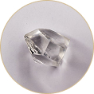

Natural diamonds, sourced exclusively from Botswana and Southern Africa.
For jewellers and dealers whose clients value rarity, authenticity and a personal connection to the land, people and craftsmanship behind their diamond.
Offer your client more than a natural diamond.
Offer a digital provenance journey from rough to polished, revealing the diamond’s true origin, the people, places and craft behind it, and the impact of its journey. One QR code scan opens an authenticated provenance story, supported by certification, photography and verified documentation.
Each diamond has a Diamond Passport accessed by QR code. It shows the diamond’s journey from rough source, including its KP certificate, through cutting and polishing to its photographs, video and GIA grading report.
Sourcing
Our network of trusted local cutters and polishers across Botswana, Angola, South Africa and Namibia gives us reliable access to polished goods with good make, sound grading and the supporting papers a jeweller needs.
Partnership
We believe in long-term relationships built on fair dealing, mutual benefit and trust. We are open where clarity is needed and discreet where confidence matters.
Services
Three ways to work with Lejwana, on the same network and the same documentation standard.
Sourcing
Send the specification: shape, weight, colour, clarity, cut, fluorescence, certification, budget and timing. We work the regional network, view the goods on the ground, and come back with what fits, what it prices at against the list, and what documentation sits behind it.
Natural polished supplied against your requirement, from singles and matched pairs to parcels and layouts. GIA certification, laser inscription, Kimberley Process paperwork and provenance records travel with the goods where they exist. Fancy colour handled on the same terms.
Rough-to-polished yield, polished pricing against the list, beneficiation policy, provenance pathways and local clearance. On retainer or by project, and independent of any purchase through Lejwana.
Lejwana deals in natural polished diamonds, after the rough has been cut and polished and before the goods go to the jeweller.
We know the whole diamond pipeline, from source and rough trading through cutting, polishing and jewellery. We work with local cutters and polishers across Botswana, Angola, South Africa and Namibia. Keeping cutting and polishing close to source helps retain skills, work and value in producing countries.
Our job is simple: find the right goods, know the make and value, and pass on the records available before the goods go to the jeweller and, in time, the customer.
MineBotswana, Angola, South Africa, Namibia and Lesotho.
Sorting and valuationRough is sorted, valued and prepared for sale.

Rough tradeRough moves through authorised trading channels.
Cutting and polishingLocal cutters and polishers turn rough into polished goods.
Polished sourcingLejwana sources polished goods from regional cutters and polishers.
JewellerThe jeweller selects the goods and makes the finished piece.
Final customerThe finished jewellery goes to the person who wears, gives or keeps it.
The SADC Diamond Network
Linking you across Southern Africa’s diamond industry
Lejwana works across Botswana, Angola, South Africa, Namibia and Lesotho, linking regional cutting and polishing with the polished market.
Each country has its own rough supply profile, skills base, trading practices, legislation and route through the diamond pipeline. Our presence across the region helps clients source natural polished goods with the records available behind them.
Country by country
Botswana
Botswana is a major source of rough diamonds and an established centre for sorting, valuation, sales and local cutting and polishing. Its mature downstream sector makes it an important part of the regional polished-diamond pipeline.
Our role: Our presence in Botswana gives us a close view of local cutting and polishing activity and the records available with polished goods.
Angola
Angola has significant rough-diamond production and a developing downstream sector. Supply routes, export processes and provenance documentation can require close local understanding.
Our role: Our presence in Angola helps us understand available polished supply and the documentation that may accompany it.
South Africa
South Africa has longstanding expertise in cutting, polishing, diamond trading and jewellery manufacture, alongside a broad technical skills base.
Our role: Our presence in South Africa supports sourcing of polished goods to agreed specifications.
Namibia
Namibia is known for specialist marine diamond production, with a distinct high-value supply profile and established export framework.
Our role: Our presence in Namibia helps us identify polished goods associated with Namibian supply and the records available with them.
Lesotho
Lesotho has a distinctive high value rough supply, including larger stones in some production, alongside a growing focus on local beneficiation, skills and diamond manufacturing.
Our role: We contribute practical market insight, valuation and trade experience, and advisory support as local cutting, polishing and value addition develop.
The Southern Cut
First-hand notes on Southern African supply, provenance and trade conditions. Published when there is something worth saying.